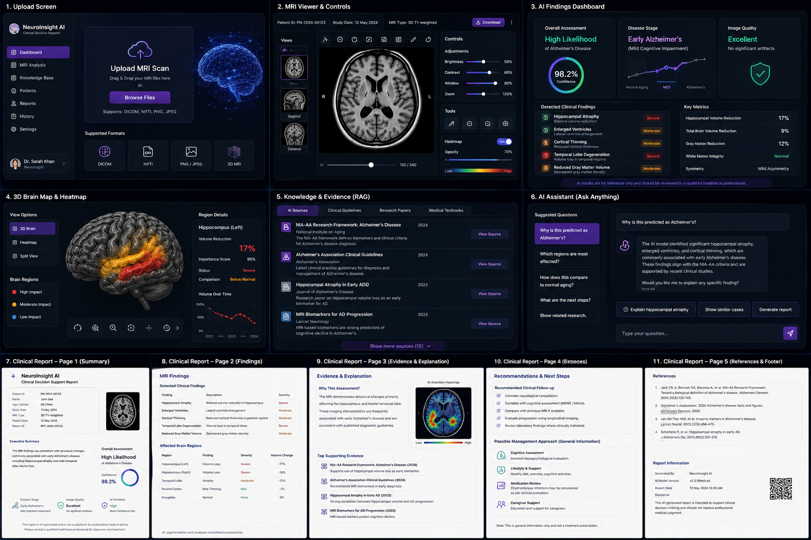
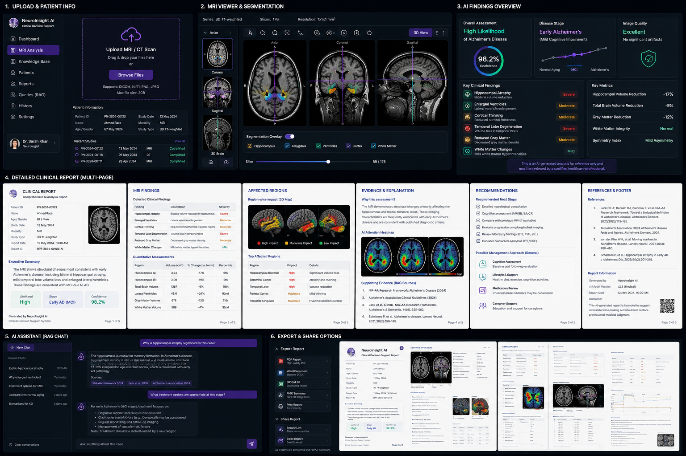
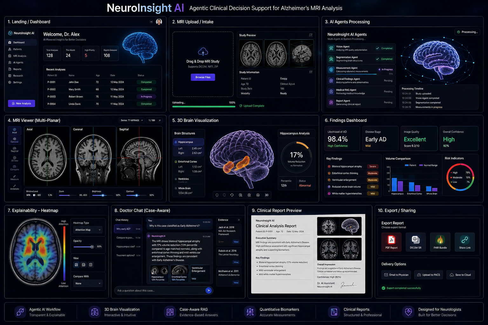
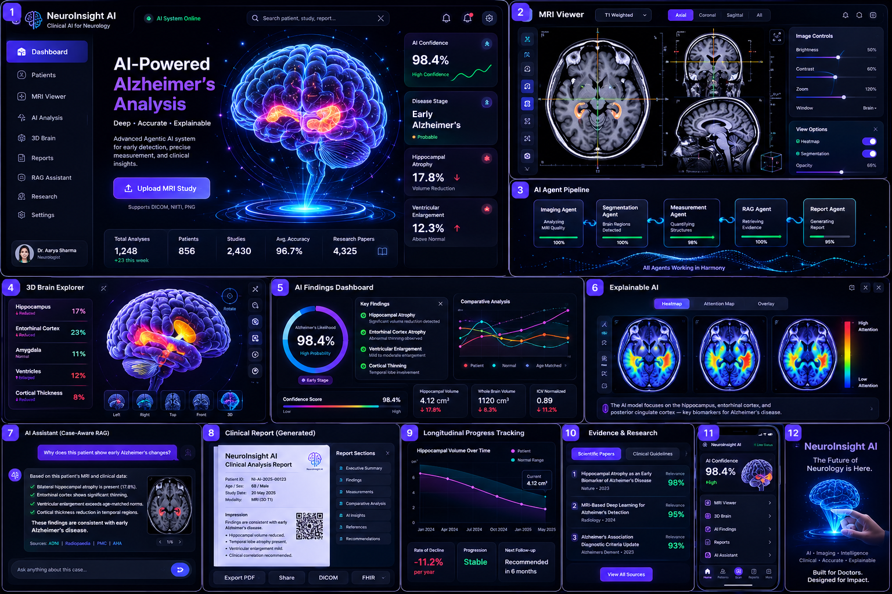
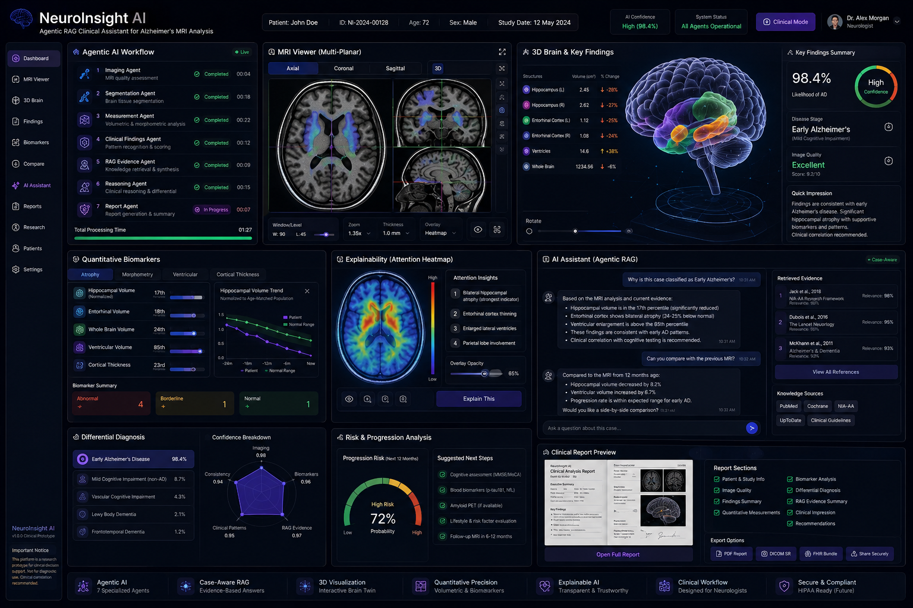

NeuroInsight AI
Agentic clinical intelligence for Alzheimer's MRI analysis — a research-driven Flutter platform exploring 3D neuroimaging, explainability and case-aware RAG.






Overview
Traditional AI medical-imaging demos stop at Image → Model → Prediction. NeuroInsight AI explores a much broader clinical workflow: image-quality assessment, brain-structure segmentation, quantitative biomarkers, explainability, evidence retrieval, case-aware reasoning and structured reporting — all around a single MRI study.
The platform is built as a research and prototype product experience, designed to be visual, explainable, evidence-aware and human-centered, with every AI conclusion intended to remain under expert clinical review rather than replace it.
Purpose — Why NeuroInsight AI Exists
Reading an Alzheimer's MRI is slow, highly specialist-dependent, and a plain "98% probability" score gives a clinician nothing to reason with. NeuroInsight AI exists to make that judgment faster and more transparent — pairing a prediction with the anatomical regions, measurements and research evidence that support it, so a radiologist can verify the AI's reasoning instead of just trusting a number.
Animated Agentic Workflow
Key Capabilities
Benefits
Agents pre-process, measure and summarize a study before a radiologist opens it.
Every finding stays explainable and reviewable — never an unchecked black box.
Case-aware RAG surfaces the research behind a finding automatically.
Every case follows the same structured report format, easing review across patients.